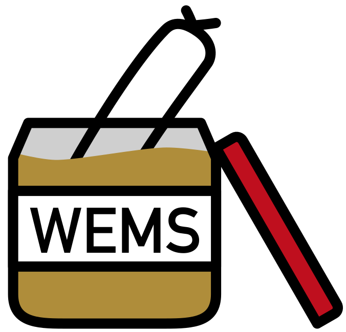
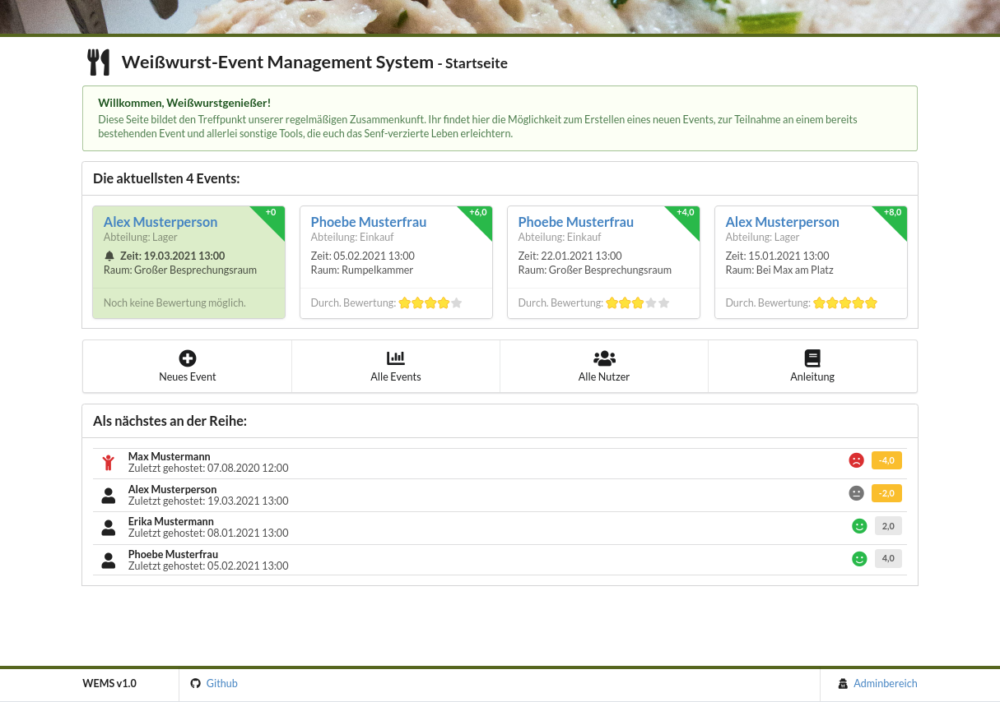
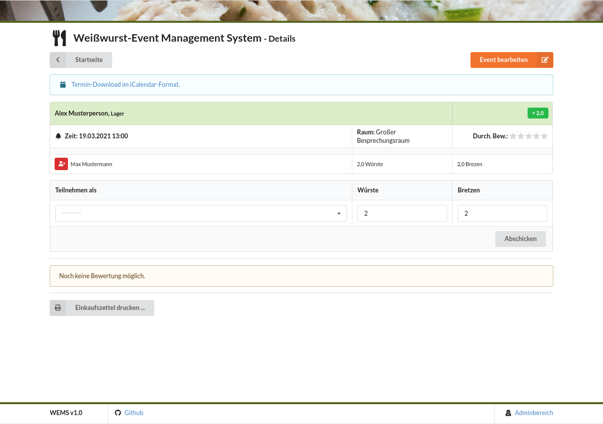
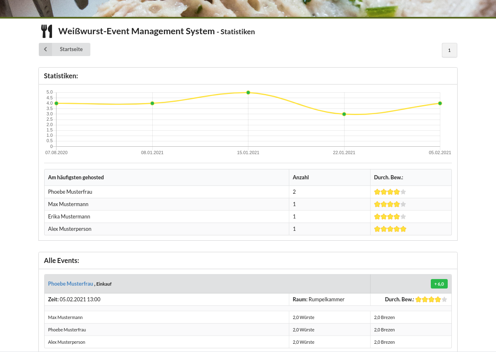

⚠ Warning:
This website is kept in German because the Weißwurst-Event Management System (WEMS) is meant for a German-speaking audience only. Now that I think about it, it isn't even meant for all German-speakers. Please consult Weißwurstäquator for more information and to check if this software is applicable in your region.
Wer kennt sie nicht: die langen, langen Excel-Tabellen zur Berechnung des nächsten Weißwurstkönigs. Blickt da überhaupt noch jemand durch? Und: Wo ist da eigentlich die Management-Summary dazu?
Das Django-basierte Weißwurst-Event Management System (kurz WEMS) löst ab sofort all deine Probleme! In einer schicken, schlanken Web-UI können du und deine Kollegen Weißwurst-Events eintragen, Teilnahmen protokollieren, den Senf bewerten und automagisch E-Mails erhalten, sobald der nächste dran ist (ja, natürlich mit Fingerzeig!).
Um die Verwaltung so einfach wie möglich zu halten, gibt es kein Berechtigungskonzept. Jeder kann für jeden alles eintragen. Nur das Löschen von Events und Bewertungen und die Anlage von Benutzern, Abteilungen und Räumen ist einem Admin überlassen, der Zugriff auf das Admininterface erhält.


